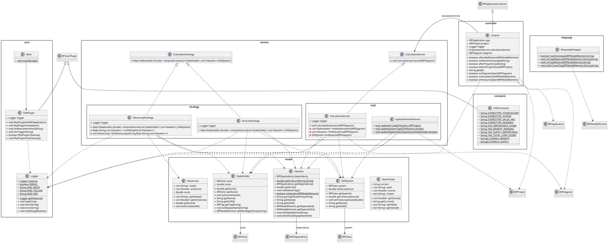

C. Conception et décisions d'architecture
Vue d'ensemble
Le plugin RhapsodySVN est structuré en couches avec une séparation claire des responsabilités. Le diagramme de classes ci-dessous illustre les relations entre les composants principaux :

Décisions architecturales
Architecture réactive plutôt que commandes manuelles
La version initiale du plugin reposait sur un ensemble de commandes manuelles déclenchées depuis le menu Rhapsody : l'utilisateur devait explicitement lancer le calcul, mettre à jour les labels, etc. Cette approche présentait un risque important d'incohérence : après toute modification du modèle, le plugin restait dans un état obsolète jusqu'à la prochaine exécution manuelle.
À partir du Sprint 3, l'architecture a basculé vers un modèle event-driven s'appuyant sur la classe Listener qui étend RPApplicationListener. Ce listener est enregistré auprès de Rhapsody au démarrage du plugin et reçoit automatiquement les notifications pour deux événements :
afterAddElement— déclenché lorsqu'un nouvel élément est ajouté au modèleonElementsChanged— déclenché lorsque la valeur d'un tag est modifiée ou qu'un élément est supprimé
Grâce à cette architecture, toute modification du modèle provoque immédiatement un recalcul, sans intervention de l'utilisateur. Cela élimine les risques d'incohérence et simplifie considérablement l'expérience d'utilisation.
Pattern Strategy pour les algorithmes de calcul
Le calcul de l'importance des stakeholders peut être conduit selon deux algorithmes distincts :
ValueLoopStrategy— implémente les équations de Cameron (2007) via une recherche DFS des value loops. Nécessite la présence d'un nœud«system»dans le modèle.ArcSumStrategy— stratégie de secours qui calcule l'importance comme la somme normalisée des scores des arcs connectés à chaque stakeholder. Utilisée en l'absence de nœud«system».
Ces deux algorithmes sont définis derrière l'interface ICalculationStrategy. Le CalculationService choisit la stratégie appropriée à l'exécution, sans que le Listener ni le reste du code ne soient affectés par ce choix. Ce pattern offre deux avantages concrets : il facilite l'ajout de nouvelles stratégies à l'avenir, et il permet de tester chaque algorithme indépendamment.
Modélisation des arcs via IRPDependency
Les arcs «valuearc» sont modélisés comme des IRPDependency (dépendances UML génériques) plutôt que comme des IRPConnector ou des associations de blocs IBD/BDD. Ce choix est contraint par les limitations de l'API Java de Rhapsody. En effet, la création de connecteurs SysML structurels depuis du code Java n'est pas possible sans passer par un profil IBD dédié, ce qui aurait complexifié considérablement l'implémentation.
L'utilisation d' IRPDependency permet de créer des arcs orientés entre n'importe quels éléments du modèle (acteurs et classes), d'y attacher des stéréotypes et des tags, et de les faire apparaître dans un diagramme ObjectModelDiagram. En contrepartie, ces arcs s'éloignent de la sémantique SysML stricte attendue pour un diagramme IBD.
Isolation de l'API Rhapsody
L'ensemble des appels à l'API IBM Rhapsody est concentré dans deux classes du package rhapsody:
RhapsodyWrapper— accès bas niveau en lecture et en écriture (tags, stéréotypes, collections d'éléments)RhapsodyElementUpdater— mise à jour des éléments du modèle (labels d'arcs, scores de stakeholders)
Cette isolation limite la surface de code à modifier en cas de changement de version de Rhapsody. Le reste de l'architecture (stratégies, service de calcul, modèles) est totalement indépendant de l'API et peut être testé sans instance Rhapsody.
Design patterns mis en œuvre
Pattern | Classe principale | Justification |
|---|---|---|
Observer |
| Souscrit aux événements Rhapsody pour déclencher automatiquement le recalcul sans polling ni intervention utilisateur |
Strategy |
| Sépare le choix de l'algorithme de son utilisation ; permet d'ajouter une stratégie sans modifier |
Singleton |
| Garantit une instance unique accessible depuis tous les composants sans passer de référence explicite |